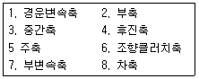
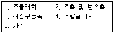
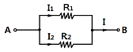
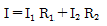
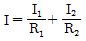
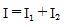
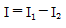

농기계정비기능사 (2011-02-13 기출문제)
1과목: 농기계정비
1. 경운기 변속축 분해순서 중 옳은 것은?

- 1-2-3-4-5-6-7-8
- 1-2-3-4-5-7-6-8
- 1-2-3-4-5-6-8-7
- 1-2-3-4-6-5-7-8
(정답률: 59%)

2. 트랙터에서 플라우 작업 시 견인부하제어(드래프트 콘트롤) 기능이 아닌 것은?
- 경심깊이 자동조정 기능
- 작업기 보호 기능
- 작업기에 걸리는 힘의 제어
- 작업기의 높이제어 기능
(정답률: 36%)
3. 동력경운기 본체의 선회가 안 될 때 점검 정비해야 할 장치는?
- 브레이크장치
- 부변속장치
- 주변속장치
- 조향장치
(정답률: 85%)
4. 피스톤 간극이 클 경우 나타나는 현상이 아닌 것은?
- 압축 압력 저하
- 실린더 마멸 증대
- 피스톤 슬랩 현상
- 엔진 오일 소비 증대
(정답률: 44%)
5. 승용 트랙터의 오일 여과기 교환 후의 조치 사항 중 틀린 것은?
- 엔진의 오일량을 점검한다.
- 충전 경고등의 이상을 확인한다.
- 엔진오일 경고등의 이상을 확인한다.
- 기관을 시동하여 여과기 조립부의 누유상태를 점검한다.
(정답률: 68%)
6. 트랙터의 킹핀각은 얼마인가?
- 2~3°
- 5~11°
- 12~15°
- 20~30°
(정답률: 57%)
7. 동력경운기의 주클러치에 대한 설명으로 틀린 것은?
- 주클러치는 원판마찰식이 주로 쓰인다.
- 주클러치조합에 오일이 들어가면 클러치가 미끄러진다.
- 변속 시 주클러치를 연결하고 변속하여야 기어의 물림이 용이하다.
- 주클러치를 끊음으로써 기관이 시동된 채로 경운기를 정지시킬 수 있다.
(정답률: 42%)
8. 벼 가공 기계 중 현미기의 탈부장치를 구성하는 것은?
- 스크루 컨베이어
- 피드 그라인더
- 고무 롤러
- 초퍼
(정답률: 44%)
9. 어떤 4행정 사이클 기관이 2250rpm 회전하였다면 제1번 실린더의 배기 밸브는 몇 번 열렸는가? (단, 1분간)
- 2250번
- 4500번
- 1125번
- 562.5번
(정답률: 59%)
10. 점화시기를 조정하는 목적과 관계없는 것은?
- 기관 시동성
- 압축 압력
- 연료 소비
- 출력
(정답률: 20%)
11. 기관과열의 원인으로 부적당한 것은?
- 팬벨트의 헐거움
- 윤활유의 압력이 높음
- 라디에이터의 막힘
- 냉각수의 부족
(정답률: 66%)
12. 트랙터의 클러치 취급요령에서 옳은 것은?
- 길고 급한 비탈길에서는 클러치를 끊고 내려간다.
- 운전 중에는 언제나 클러치 페달위에 발을 올려놓는다.
- 반 클러치는 클러치판을 상하게 하기 때문에 특히 필요한 경우를 제외하고는 사용을 삼가야 한다.
- 변속기를 사용할 때는 클러치판을 사용하면 안 된다.
(정답률: 81%)
13. 크랭크축의 휨의 정도를 검사하는 측정 계기는?
- 하이트 게이지
- 다이얼 게이지
- 마이크로미터
- 버니어 켈리퍼스
(정답률: 53%)
14. 냉각수의 순환 경로가 아닌 곳은?
- 피스톤
- 실린더 헤드
- 실린더 블록
- 정온기
(정답률: 63%)
15. 압축 압력을 측정한 결과 측정값이 기준값보다 높다면 다음 중에서 어느 경우인가?
- 밸브계통의 이상
- 실린더 마멸
- 연소실의 카본 퇴적
- 헤드가스킷의 파손
(정답률: 72%)
16. 실린더 라이너의 안지름을 측정할 때 사용되는 공구는?
- 시크니스 게이지
- 사인 게이지
- 하이트 게이지
- 실린더 보어 게이지
(정답률: 85%)
17. 국내 콤바인의 변속장치로 많이 사용되는 것은?
- 선택미끄럼방식
- 싱크로메시
- H.S.T(유압무단변속기)
- C.V.T
(정답률: 74%)
18. 동력경운기 히치의 기능으로 올바른 것은?
- 경운기 본기와 트레일러를 연결한다.
- 경운기 본기와 로터리를 연결한다.
- 경운기 엔진과 본기부를 연결한다.
- 경운기 본기에 동력을 전달한다.
(정답률: 68%)
19. 일반적으로 트렉터 차동잠금장치를 사용하지 않는 경우는?
- 진흙 포장 작업할 때
- 일반 도로 주행할 때
- 한쪽 구동륜에서 슬립이 발생할 때
- 한쪽 구동륜의 추진력이 약해 움직일 수 없을 때
(정답률: 84%)
20. 동력경운기 브레이크 링 분해 방법 중 옳지 않은 것은?
- 주 클러치 레버를 연결 위치에 놓는다.
- 배유 볼트를 풀고 엔진 오일을 완전히 제거한다.
- 브레이크 연결 로드를 분해한 다음 브레이크 커버를 떼어낸다.
- 브레이크 드럼의 고정 볼트를 푼다.
(정답률: 49%)
2과목: 농기계전기
21. 디젤기관에서 정상부하운전인데도 검은 연기의 배기가스가 발생된다. 그 원인이 아닌 것은?
- 공기 청정기가 박혔을 때
- 연료의 분사시기가 늦을 때
- 연료의 분사량이 너무 많을 때
- 연료통의 용량이 너무 클 때
(정답률: 61%)
22. 고온연무기의 주 사용연료는 무엇인가?
- 가솔린
- 백등유
- 경유
- LP가스
(정답률: 58%)
23. 트렉터의 냉각장치인 라디에이터 코어 막힘율은 몇 % 이상일 경우 정비하여야 하는가?
- 10%
- 20%
- 30%
- 50%
(정답률: 68%)
24. 트렉터의 제동장치에 대한 설명으로 옳은 것은?
- 변속기축에 설치한다.
- 좌우 독립된 구조이다.
- 선회 고정 장치로 활용된다.
- 외부 확장식이 주로 사용된다.
(정답률: 67%)
25. 보행관리기에 사용되는 주클러치는?
- 마찰 클러치
- 맞물림 클러치
- 유체 클러치
- V벨트 클러치
(정답률: 50%)
26. 트렉터에서 동력취출축의 국제표준 회전속도는?
- 340rpm, 500rpm
- 540rpm, 1000rpm
- 540rpm, 1500rpm
- 1040rpm, 1500rpm
(정답률: 77%)
27. 트렉터 작업기 부착 시 좌우 수평조절장치 구조로 맞는 것은?
- 스프링 장치
- 레벨링 핸들 장치
- 상부링크 장치
- 체인 장치
(정답률: 50%)
28. 작업 중 로터베이터가 토양을 파고들지 못하고 지면 위로 뜬다. 그 원인은?
- 트랙터 동력이 너무 강할 때
- 작업기 좌우가 수평이 되지 않았을 때
- 경운날을 올바르게 부착하지 않을 때
- 앞바퀴 압력이 낮을 때
(정답률: 53%)
29. 동력경운기에서 동력 전달 장치 순서로 옳은 것은?

- 1-2-3-4-5
- 1-2-4-3-5
- 1-2-3-5-4
- 1-2-5-4-3
(정답률: 73%)
30. 4조식 보행형 이앙기의 작업 전 조정부분이 아닌 것은?
- 심는 깊이
- 횡방향 묘취량
- 핸들높이 직경
- 종방향 묘취량
(정답률: 70%)
31. 직류 전압 E, 저항 R인 회로에 전류 I가 흐를 때 R에서 소비되는 전력을 P라 할 때 다음 설명 중 틀린 것은?
- I가 일정하면 P는 E에 비례한다.
- I가 일정하면 P는 R에 반비례한다.
- R이 일정하면 P는 E2에 비례한다.
- R이 일정하면 P는 R2에 비례한다.
(정답률: 60%)
32. 마그네틱 점화방식에 있어서 발전부의 형식에 따른 분류에 속하지 않는 것은?
- 발전자 회전형
- 자강 회전형
- 유도자 회전형
- 타여자 전류형
(정답률: 53%)
33. 납축전지 충방전 시 사용하는 용액은?
- 묽은 염산
- 묽은 황산
- 묽은 초산
- 묽은 질산
(정답률: 78%)
34. 점화시기 조정에 대한 설명으로 잘못된 것은?
- 점화시기를 조정하기 전에 단속기 접점 간극을 먼저 조정해야 한다.
- 단속기를 회전시켜 조정한다.
- 고정 접점의 나사를 풀고 접점을 이동시켜 조정한다.
- IG란 표시는 점화시기를 나타낸다.
(정답률: 33%)
35. 방향지시기 회로에서 지시등의 점멸이 느릴 때의 원인으로 틀린 것은?
- 축전지가 방전 되었다.
- 전구의 용량이 규정 값 보다 크다.
- 전구의 접지가 불량하다.
- 퓨즈와 배선의 접촉이 불량하다.
(정답률: 64%)
36. 주파수가 50Hz인 사인파 교류의 주기는?
- 0.02초
- 0.04초
- 0.06초
- 0.08초
(정답률: 33%)
37. 축전지 전해액을 실측한 비중계의 눈금이 1.240이고, 전해액의 온도가 50[℃]인 경우, 다음 중 표준 상태의 비중으로 적합한 것은?
- 0.912
- 1.026
- 1.133
- 1.254
(정답률: 42%)
38. 전해액을 만들 때 사용할 용기로 가장 적합한 것은?
- 질그릇 용기
- 철제 용기
- 구리합금 용기
- 알루미늄 용기
(정답률: 73%)
39. 경운기의 야간 운행 중 전조등이 점차로 어두워지는 경우의 주원인은?
- 라이트 스위치의 작동이 원활하지 않고 접촉 불량인 경우
- 필라멘트가 단선되었거나 회로가 차단되는 경우
- 전기 배선이나 퓨즈 홀더가 헐거운 경우
- 축전지의 충전량이 부족한 경우
(정답률: 60%)
40. 농용 트랙터 12[V] 발전기의 발전 전류를 30[A]라 하면 이 발전기의 저항은?
- 0.4[Ω]
- 0.5[Ω]
- 2[Ω]
- 3[Ω]
(정답률: 57%)
3과목: 농기계안전관리
41. 어떤 전선의 길이를 A배, 단면적을 B배로 하면 전기저항은?
- B/A
- A・B
- A/B
- (A・B)/2
(정답률: 44%)
42. 전류가 흐르는 도체가 자장에서 받는 힘의 방향을 나타내는 법칙은?
- 앙페르의 오른나사 법칙
- 플레밍의 오른손 법칙
- 렌쯔의 법칙
- 플레밍의 왼손 법칙
(정답률: 44%)
43. 그림과 같은 회로에서 전류 I는?





(정답률: 46%)
44. 축전지 용량이 150Ah 일 때 10A로 계속 사용하면 사용할 수 있는 시간은?
- 10시간
- 15시간
- 20시간
- 25시간
(정답률: 82%)
45. 배전기 접점간극에 대한 설명으로 잘못된 것은?
- 접점간극은 기관에 따라 다르나 대략 0.3~0.5㎜ 정도이다.
- 접전간극이 너무 작으면 점화시기가 늦어진다.
- 접점간극의 크기는 점화시기와 관계가 없다.
- 점점간극이 너무 크면 점화시기가 빨라진다.
(정답률: 63%)
46. 전기 화재의 발생 원인으로 부적합 한 것은?
- 과전류
- 단락(합선)
- 자연발화
- 불꽃방전(스파크)
(정답률: 84%)
47. 다음 중 트랙터의 포장작업 시 유의사항으로 틀린 것은?
- 급발진, 급정지를 하지 않는다.
- PTO회전 시 청소 및 손질을 금지한다.
- 작업기 부착 시 엔진 시동상태에서 한다.
- 작업기를 들어 올린채 방치하면 안 된다.
(정답률: 82%)
48. 농업기계 정비작업 중 옳지 않은 것은?
- 흡연은 정해진 장소에서 한다.
- 쓰고 남은 기름은 하수구에 버린다.
- 기럼걸레는 정해진 용기에 보관한다.
- 전등갓은 연소하기 쉬운 것을 사용하지 않는다.
(정답률: 90%)
49. 콤바인 각부의 조절 및 정비 시 안전사항과 거리가 먼 것은?
- 차체도장 부분이 손상되지 않도록 한다.
- 체인 및 벨트를 너무 죄지 않도록 한다.
- 정비할 때는 기관을 가동시킨 상태에서 정비한다.
- 체인, 벨트 및 카터 날에 함부로 손을 대지 말아야 한다.
(정답률: 83%)
50. 안전작업에 관한 사항 중 틀린 것은?
- 사다리기둥과 수평면 각도는 75° 이하로 한다.
- 해머 작업하기 전에 반드시 주위를 살핀다.
- 숫돌 작업은 정면을 피해서 작업한다.
- 운반통로는 가능한 곡선을 선택한다.
(정답률: 76%)
51. 안전작업이 필요한 가장 큰 이유는?
- 공구관리철저
- 다량 생산
- 좋은 제품을 생산
- 인명피해 예방
(정답률: 86%)
52. 전동기 작업 중 갑자기 회전이 중지되었을 대 조치한 사항 중 가장 옳은 것은?
- 전동기를 즉시 분해 조치하였다.
- 스위치를 끄고 메인 스위치를 차단시켰다.
- 그 상태대로 놓아두고 다른 업무를 보았다.
- 고장원인을 규명하기 위하여 즉시 회전체를 손으로 돌려 보았다.
(정답률: 86%)
53. 안전에 관계되는 위험한 장소나 위험물 안전표지 등에 사용되는 색깔은 어느 것인가?
- 빨간색
- 녹색
- 노란색
- 흰색
(정답률: 47%)
54. 하인리히의 재해 발생 과정을 열거하였다. 맞는 것은?
- 개인적 결함-불안전 행동-사회적 선천적 결함-재해-사고
- 사회적 선천적 결함-개인적 결함-불안전 행동-사고-재해
- 재해-사회적 선천적 결함-개인적 결함-사고-불안전 행동
- 불안전 행동-개인적 결함-사회적 선천적 결함-사고-재해
(정답률: 59%)
55. 부품의 세척작업 중 알칼리성이나 산성의 세척유가 눈에 들어갔을 경우에 가장 좋은 응급조치 방법은?
- 먼저 바람 부는 쪽을 향해 눈을 크게 뜨고 눈물을 흘린다.
- 먼저 산성 세척유로 중화시킨다.
- 먼저 붕산수를 넣어 중화시킨다.
- 먼저 수돗물로 씻어낸다.
(정답률: 83%)
56. 트레일러에 물건을 실을 때 무거운 물건의 중심위치는 다음 중 어느 위치에 있어야 안전한가?
- 상부
- 하부
- 뒷부분
- 앞부분
(정답률: 65%)
57. 가스 화재를 일으키는 가연물질로만 되어 있는 것은?
- 에탄, 프로판, 부탄, 등유, 가솔린
- 에탄, 메탄, 부탄, 가솔린, 경유
- 메탄, 에탄, 프로판, 부탄, 수소
- 에탄, 중유, 부탄, 펜탄, 가솔린
(정답률: 68%)
58. 수공구 작업에 대한 설명으로 가장 적합한 것은?
- 스패너는 밀면서 작업한다.
- 헤머로 가공물을 타격 시에는 해머 끝을 본다.
- 브레이크 동파이프의 절단은 플라이어로 한다.
- 헤드볼트를 조일 시에는 토오크 렌치를 사용한다.
(정답률: 74%)
59. 다음 중 인화성 유해 위험물에 대한 공통적인 성질을 설명한 것으로 틀린 것은?
- 착화온도가 낮은 것은 위험하다.
- 물보다 가볍고, 물에 녹기 어렵다.
- 발생된 증기는 대부분 공기보다 가볍다.
- 증기는 공기와 약간 혼합되어도 연소의 우려가 있다.
(정답률: 62%)
60. 다음 중 안전관리와 같은 의미로 사용되는 것이 아닌 것은?
- 통제
- 재해예방
- 경비증대
- 사고방지
(정답률: 75%)
2. 변속축 기어를 제거한다.
3. 변속축 기어와 연결된 기어를 제거한다.
4. 변속축 기어와 연결된 기어를 제거한다.
5. 변속축 기어와 연결된 기어를 제거한다.
6. 변속축 기어를 제거한다.
7. 변속축 베어링을 제거한다.
8. 변속축을 분리한다.
정답이 "1-2-3-4-5-7-6-8" 인 이유는, 변속축을 분해할 때 변속축 덮개를 먼저 제거하고, 기어를 순서대로 제거한 후에 베어링을 제거하고 마지막으로 변속축을 분리하기 때문입니다. 따라서, 1-2-3-4-5-7-6-8 순서대로 분해해야 합니다.